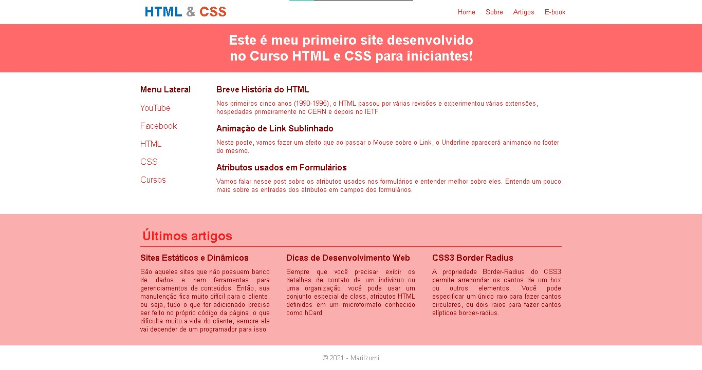

PRIMEIRA PÁGINA
Este foi o meu primeiro projeto que realizei por um curso disponibilizado na plataforma Workover. Utilizei as seguintes tecnologias:
- HTML
- CSS
CERTIFICARD
Projeto final da ImersãoDev da Alura que realizei em 2020, nele contém todos os demais projetos realizados durante esta semana de aprendizagem. Tecnologias utilizadas:
- HTML
- CSS
- JavaScript (nas demais aplicações)
Atualmente além dos projetos da faculdade, gostaria de dar início em algum projeto pessoal. Como por exemplo uma landing page do projeto voluntário que participo, o Projeto Á Flor da Pele